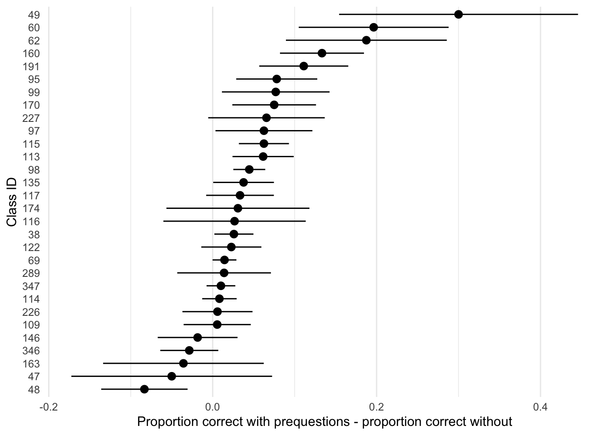
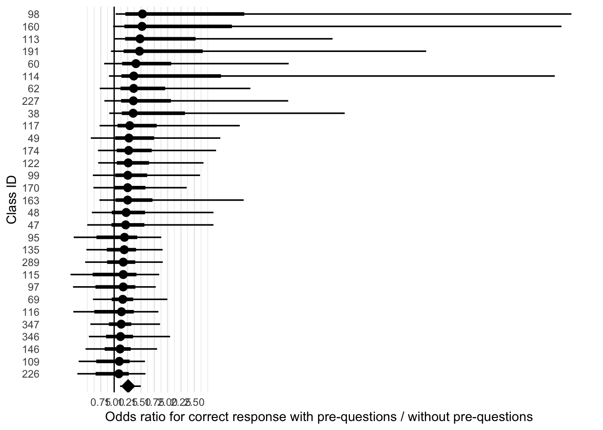
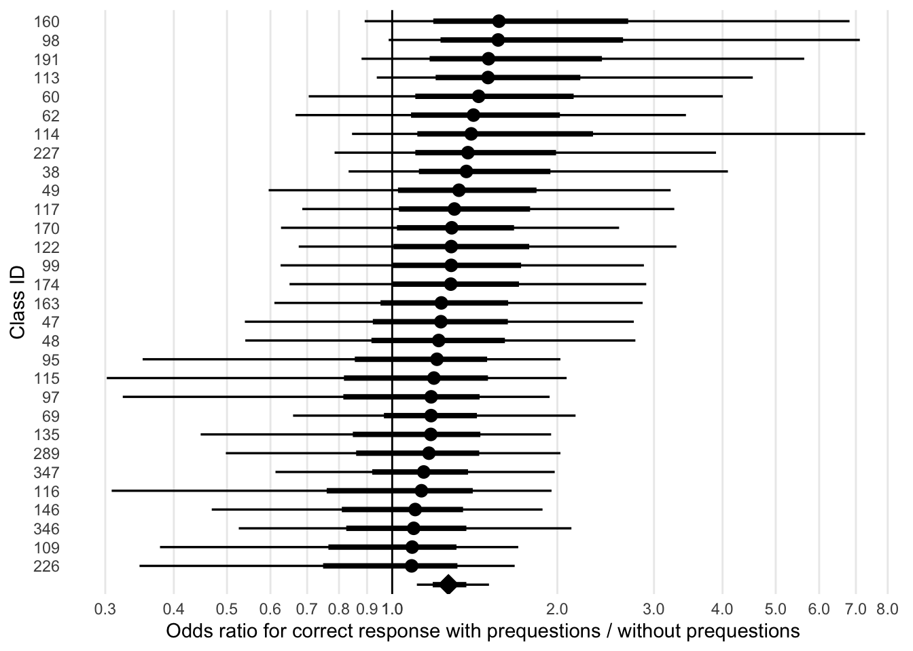

ManyClasses 2 Analysis
Raw data visualization
Overall Model
This model is score | trials(trials) ~ condition + (0 + condition | course_id) + (1 | course_id/participant_id). A fixed effect of condition (prequestions vs. control) and a random effect of condition per class, and random intercept of participant , nested in random intercept of class.

Moderators
Class Level
Exposure order
Estimate
Intercept 1.1007931800
conditionprequestions 0.2439874680
exposure_orderprequestions_then_control -0.0013233325
conditionprequestions:exposure_orderprequestions_then_control -0.0003760324
Est.Error
Intercept 0.20413188
conditionprequestions 0.08764960
exposure_orderprequestions_then_control 0.10924918
conditionprequestions:exposure_orderprequestions_then_control 0.08274663
Q2.5
Intercept 0.69600872
conditionprequestions 0.08246071
exposure_orderprequestions_then_control -0.21196251
conditionprequestions:exposure_orderprequestions_then_control -0.16016921
Q97.5
Intercept 1.5024016
conditionprequestions 0.4243475
exposure_orderprequestions_then_control 0.2181863
conditionprequestions:exposure_orderprequestions_then_control 0.1622860

Number of Assignments
Estimate Est.Error
Intercept 1.1485410897 0.274511970
conditionprequestions 0.2592030418 0.108009070
nbr_other_assessments -0.0030888913 0.010731318
conditionprequestions:nbr_other_assessments -0.0005784275 0.003980395
Q2.5 Q97.5
Intercept 0.614125059 1.699603059
conditionprequestions 0.049840173 0.477482458
nbr_other_assessments -0.024366697 0.017934830
conditionprequestions:nbr_other_assessments -0.007988168 0.007809536Student Level
Grade Level
Estimate Est.Error Q2.5
Intercept 1.22418678 0.22602471 0.7816586
conditionprequestions 0.25644380 0.08321822 0.1106517
levelhighschool -0.75895600 0.29249517 -1.3430223
levelmiddleschool 0.03421185 0.37527890 -0.7053774
conditionprequestions:levelhighschool -0.23454181 0.17090923 -0.5879975
conditionprequestions:levelmiddleschool 0.13120626 0.20819988 -0.2818291
Q97.5
Intercept 1.67284359
conditionprequestions 0.43857778
levelhighschool -0.18544938
levelmiddleschool 0.78148001
conditionprequestions:levelhighschool 0.08498729
conditionprequestions:levelmiddleschool 0.53287119Pretest
Note: We get a warning that NAs are excluded.
Estimate Est.Error Q2.5 Q97.5
Intercept -0.1700193 0.4143293 -0.9578223 0.6824816
conditionprequestions -0.1317024 0.2171807 -0.5618882 0.2960586
pretest 1.3062053 0.4161854 0.4320505 2.0702413
conditionprequestions:pretest 0.4191411 0.2458184 -0.0611335 0.9109878In Major
Estimate Est.Error Q2.5 Q97.5
Intercept 1.05199190 0.2071393 0.64529417 1.4655072
conditionprequestions 0.21313711 0.0955254 0.03192865 0.4123756
in_major 0.09766705 0.1752567 -0.25124247 0.4392359
conditionprequestions:in_major 0.06878901 0.1459336 -0.21320920 0.3674695Prequestion Score
Estimate Est.Error Q2.5
Intercept 0.9410335 0.2111078 0.5278990
conditionprequestions -0.1359334 0.1134044 -0.3430328
prequestion_score 0.2754550 0.1883453 -0.1126185
conditionprequestions:prequestion_score 0.7958311 0.1720077 0.4505461
Q97.5
Intercept 1.3507736
conditionprequestions 0.1040173
prequestion_score 0.6257440
conditionprequestions:prequestion_score 1.1278229Submission Level
Percentage of video viewed
Estimate Est.Error Q2.5 Q97.5
Intercept 0.89910251 0.2024996 0.49824235 1.2924833
conditionprequestions 0.21657031 0.1050414 0.01826824 0.4341344
viewpct 0.29040711 0.1207213 0.05421348 0.5332300
conditionprequestions:viewpct 0.04653907 0.1259873 -0.19721736 0.2990049Did the student start the video at all?
Estimate Est.Error Q2.5
Intercept 0.9740670 0.2129967 0.55375675
conditionprequestions 0.1387440 0.1262866 -0.09747221
initiate_playback 0.1515584 0.1381412 -0.12870099
conditionprequestions:initiate_playback 0.1530932 0.1458504 -0.13178068
Q97.5
Intercept 1.3961798
conditionprequestions 0.3946439
initiate_playback 0.4138138
conditionprequestions:initiate_playback 0.4380341N Events (clicks?)
Estimate Est.Error Q2.5 Q97.5
Intercept 0.8789407468 0.195097546 0.49165672 1.26967495
conditionprequestions 0.2830196730 0.107513470 0.08166186 0.50495302
nevents 0.0233593130 0.007026262 0.01028609 0.03792326
conditionprequestions:nevents -0.0004721388 0.008535972 -0.01659649 0.01693655Duration
This model won’t run.
Submission time
Estimate Est.Error Q2.5
Intercept 1.13231324 0.21011301 0.71556466
conditionprequestions 0.16809970 0.09798907 -0.01793738
submDaysBeforeDueDate -0.01726933 0.03462103 -0.08634888
conditionprequestions:submDaysBeforeDueDate 0.03818521 0.03204600 -0.02043939
Q97.5
Intercept 1.54755229
conditionprequestions 0.36651862
submDaysBeforeDueDate 0.04984259
conditionprequestions:submDaysBeforeDueDate 0.10634930Exposure Level
Current thinking about model structure: we don’t have enough different exposures in each class to get class-level estimates of the exposure-level moderators. I’m including intercepts for courses and participants, as well as exposure-level slopes are condition effects within classes. The moderator is then estimated only at the population level. Theoretically I think we’d expect these to vary across classes or even across individuals, but I don’t think we have the data to fit that kind of model.
delay: days between assignment due date and exam date
Estimate Est.Error Q2.5 Q97.5
Intercept 1.067347365 0.262464920 0.559377619 1.59965098
conditionprequestions 0.124416084 0.112037436 -0.085735420 0.35626069
delay 0.006963882 0.015946763 -0.023597724 0.03858447
conditionprequestions:delay 0.011775632 0.008078036 -0.004355443 0.02749770pct_correct: overall percent correct on the exam items
Estimate Est.Error Q2.5 Q97.5
Intercept -1.8144204 0.3127610 -2.3401440 -1.1165345
conditionprequestions -0.2781119 0.2187833 -0.7091758 0.1444422
pct_correct 4.1089841 0.4269439 3.1532000 4.8468652
conditionprequestions:pct_correct 0.7618218 0.3122631 0.1635884 1.3876894video_length: total duration of video
Estimate Est.Error Q2.5
Intercept 1.422750e+00 0.961500119 -0.436278462
conditionprequestions 2.657384e-01 0.338969874 -0.396794724
video_length -1.074829e-03 0.003499028 -0.008036701
conditionprequestions:video_length -6.253813e-05 0.001217258 -0.002474542
Q97.5
Intercept 3.324472091
conditionprequestions 0.937392656
video_length 0.005644177
conditionprequestions:video_length 0.002317533avg_time_of_prequestions: avg percent of the video elapsed when prequestions are addressed
Estimate Est.Error
Intercept 0.820607938 0.345692333
conditionprequestions 0.102047274 0.190544543
avg_time_of_prequestions 0.001886941 0.002136599
conditionprequestions:avg_time_of_prequestions 0.001577370 0.001513700
Q2.5 Q97.5
Intercept 0.130236704 1.490516956
conditionprequestions -0.264862867 0.481664421
avg_time_of_prequestions -0.002470430 0.005964099
conditionprequestions:avg_time_of_prequestions -0.001417653 0.004525515time_answering_preqs: cumulative time spent addressing prequestions in video
Estimate Est.Error
Intercept 1.0455267981 0.2605429634
conditionprequestions 0.1863621958 0.1188672167
time_answering_preqs 0.0006404681 0.0010993995
conditionprequestions:time_answering_preqs 0.0004732468 0.0006551986
Q2.5 Q97.5
Intercept 0.5309638362 1.550658035
conditionprequestions -0.0370204008 0.434759882
time_answering_preqs -0.0015139699 0.002834161
conditionprequestions:time_answering_preqs -0.0008180715 0.001769061answer_not_provided: was there at least one prequestion where the answer was never presented (learner needed to infer answer)
Estimate Est.Error Q2.5
Intercept 1.0222817 0.2264354 0.5799692
conditionprequestions 0.3580046 0.1009772 0.1602963
answer_not_provided 0.2207364 0.2078552 -0.2006875
conditionprequestions:answer_not_provided -0.1997599 0.1334326 -0.4557807
Q97.5
Intercept 1.47459643
conditionprequestions 0.55774333
answer_not_provided 0.62109999
conditionprequestions:answer_not_provided 0.06980636require_memorization: Does any prequestion involve memorization of a word/term/phrase?
Estimate Est.Error Q2.5
Intercept 1.1141236 0.21012707 0.6920552
conditionprequestions 0.2395467 0.07619134 0.1015266
require_memorization 0.2151660 0.43621216 -0.6364844
conditionprequestions:require_memorization 0.3458060 0.33676746 -0.3097383
Q97.5
Intercept 1.524643
conditionprequestions 0.401559
require_memorization 1.056479
conditionprequestions:require_memorization 1.017268preq_difficulty: percent correct (overall) on the prequestions associated with the video
Estimate Est.Error Q2.5
Intercept 0.86272561 0.2957645 0.29429106
conditionprequestions 0.28192026 0.1821148 -0.06757444
preq_difficulty 0.51946644 0.4076614 -0.28090048
conditionprequestions:preq_difficulty -0.06230942 0.3203573 -0.70056746
Q97.5
Intercept 1.4560099
conditionprequestions 0.6443488
preq_difficulty 1.3061200
conditionprequestions:preq_difficulty 0.5688507Secondary Analyses
Percentage of video viewed
With all students
Estimate Est.Error Q2.5 Q97.5
Intercept 0.70200150 0.02785188 0.64813313 0.75720664
conditionprequestions -0.04697233 0.01224958 -0.07083301 -0.02300978With only students who initiated playback
Estimate Est.Error Q2.5 Q97.5
Intercept 0.822165376 0.01834563 0.78656660 0.85854733
conditionprequestions -0.008321776 0.01023105 -0.02851257 0.01180057Did the student start the video at all?
Estimate Est.Error Q2.5 Q97.5
Intercept 2.4466944 0.2353174 2.002041 2.935341
conditionprequestions -0.4290643 0.1040749 -0.638061 -0.227666